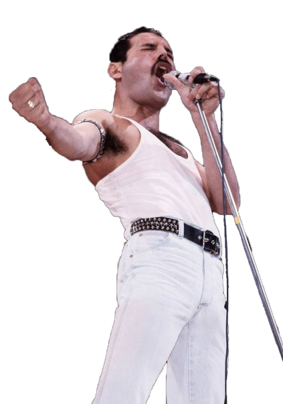
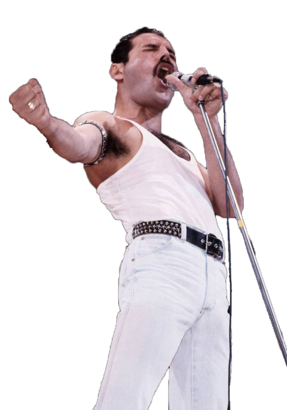

Peace and Love
"I won't be a rock star, I will be a legend"
"About ten years ago, I knew three chords on the guitar. Now, in 1982, I know three chords on the guitar."
“Who wants to live forever?”
“If it’s planned, it’s boring.”
- Freddie Mercury
MORE QUOTESFreddie Mercury (born Farrokh Bulsara; 5 September 1946 – 24 November 1991)[2] was a British singer and songwriter, who achieved worldwide fame as the lead vocalist of the rock band Queen. Regarded as one of the greatest singers in the history of rock music, he was known for his flamboyant stage persona and four-octave vocal range. Mercury defied the conventions of a rock frontman with his theatrical style, influencing the artistic direction of Queen. Born in 1946 in Zanzibar to Parsi-Indian parents, Mercury attended English-style boarding schools in India from the age of eight and returned to Zanzibar after secondary school. In 1964, his family fled the Zanzibar Revolution, moving to Middlesex, England. Having studied and written music for years, he formed Queen in 1970 with guitarist Brian May and drummer Roger Taylor. Mercury wrote numerous hits for Queen, including "Killer Queen", "Bohemian Rhapsody", "Somebody to Love", "We Are the Champions", "Don't Stop Me Now" and "Crazy Little Thing Called Love". His charismatic stage performances often saw him interact with the audience, as displayed at the 1985 Live Aid concert. He also led a solo career and was a producer and guest musician for other artists. Mercury was diagnosed with AIDS in 1987. He continued to record with Queen, and posthumously featured on their final album, Made in Heaven (1995). In 1991, the day after announcing his diagnosis, he died from complications of the disease, at the age of 45. In 1992, a concert in tribute to him was held at Wembley Stadium, in benefit of AIDS awareness. His career with Queen was dramatised in the 2018 biopic Bohemian Rhapsody. As a member of Queen, Mercury was posthumously inducted into the Rock and Roll Hall of Fame in 2001, the Songwriters Hall of Fame in 2003, and the UK Music Hall of Fame in 2004. In 1990, he and the other Queen members were awarded the Brit Award for Outstanding Contribution to British Music, and one year after his death, Mercury was awarded it individually. In 2005, Queen were awarded an Ivor Novello Award for Outstanding Song Collection from the British Academy of Songwriters, Composers, and Authors. In 2002, Mercury was voted number 58 in the BBC's poll of the 100 Greatest Britons.
Who is Freddie Mercury?
 
